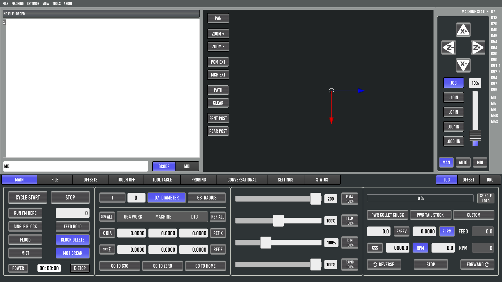
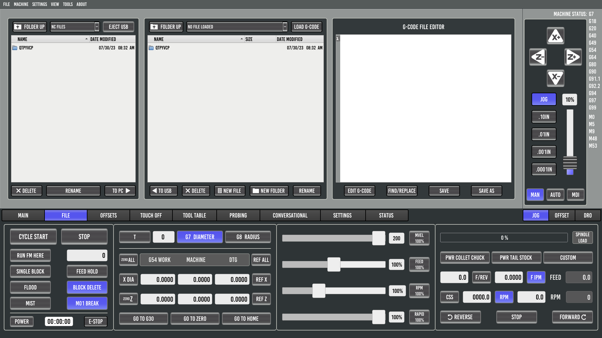
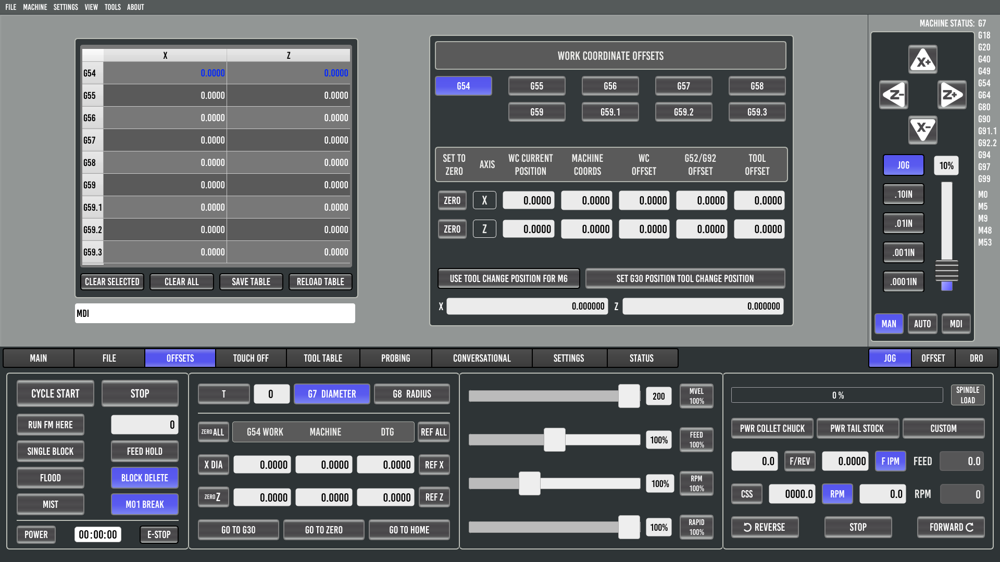
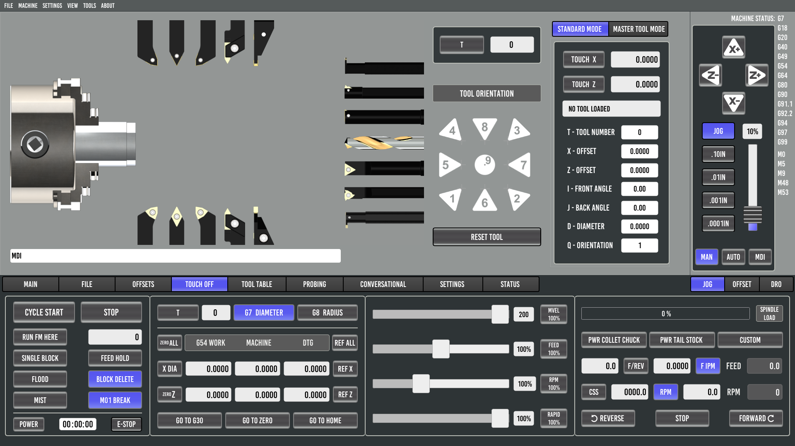
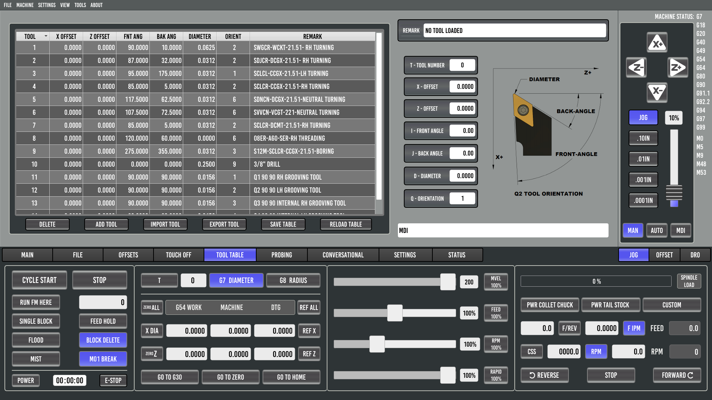
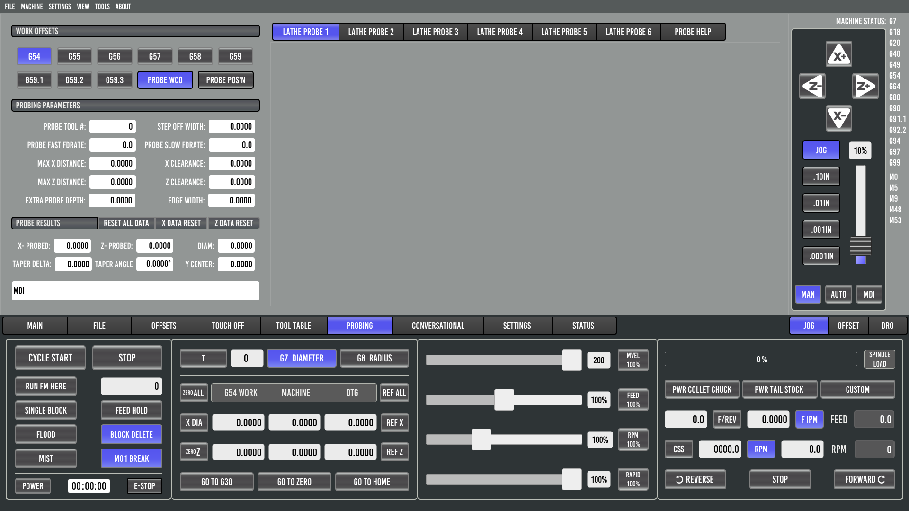
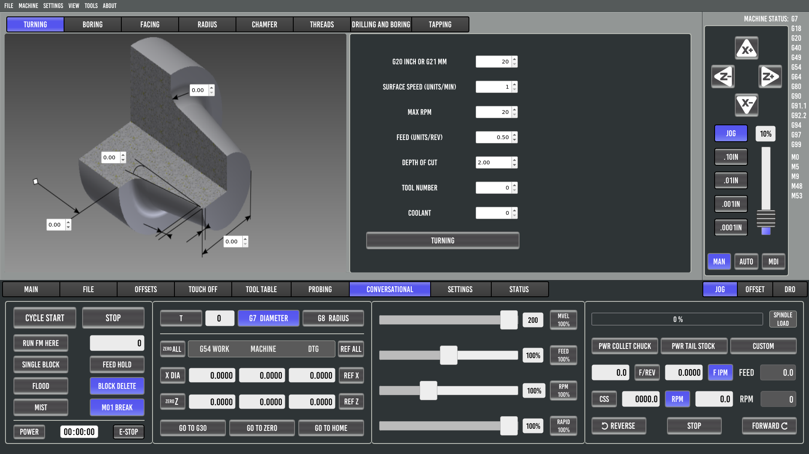
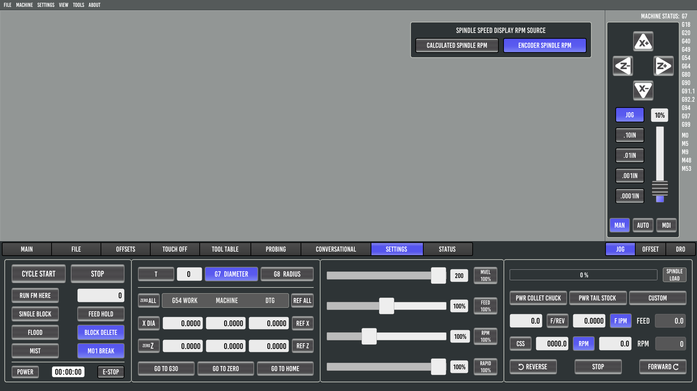
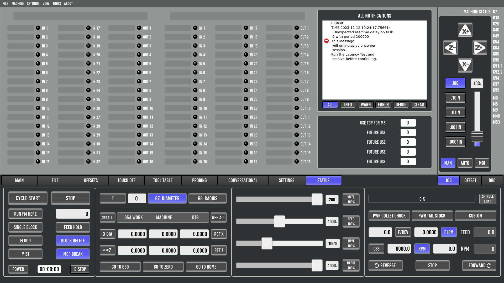

ProbeBasic
Installation:
Probe Basic APT Stable Install
Probe Basic APT Develop Install
Changing Stable <-> Develop Versions
Probe Basic .deb Install
Development Install
Configuration:
Probe Basic Parameters
Machine Configuration (INI, HAL, Files)
Carousel ATC Setup
Interface:
Mill
Lathe
Main
File
Offsets
Touch Off
Tool Table
Probing
Conversational
Settings
Status
Probing
Tool Length Setter
Extending:
User Tabs
Customisation with Python
ProbeBasic
Probe Basic Lathe Interface
View page source
Probe Basic Lathe Interface
Main

File

Offsets

Touch Off

Tool Table

Probing

Conversational

Settings

Status
